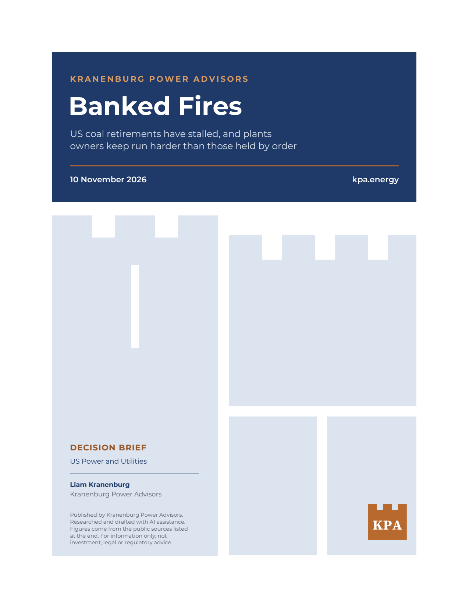
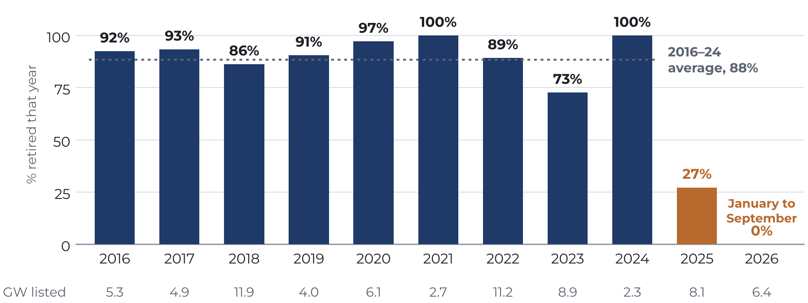
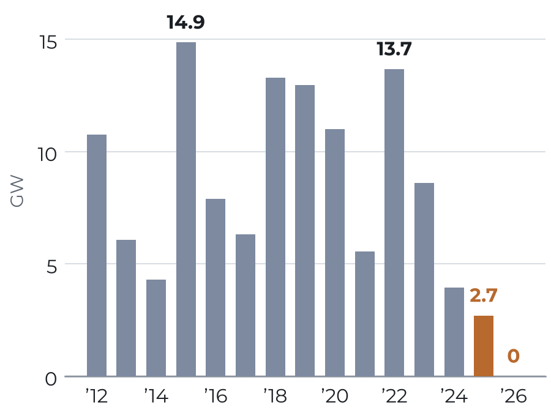
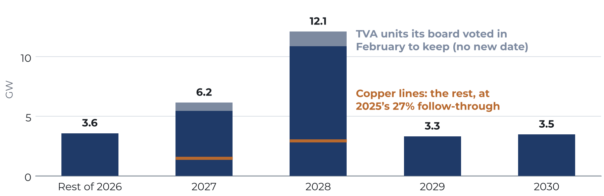

Banked Fires
US coal retirements have stalled, and plants owners keep run harder than those held by order

Key implications
On 14 November, the sixth federal emergency order keeping the J.H. Campbell coal plant in Michigan open expires; the plant was due to close in May 2025. In times past, a retirement date in the government's generator inventory was close to a promise: in 2016–24, 88% of the coal capacity listed a year ahead retired in the year listed. Yet the conveyor has stopped. In 2025, 27% did, and none of the 6.4 gigawatts (GW) listed for 2026 had retired by the end of September. KPA analysis shows who is holding the plants, and which ones run. Orders hold 3.7 GW of the 8.1 GW of delayed coal, and those units ran at 22% of capacity this year. Owners and grid contracts kept the other 4.4 GW, and those ran at 38%. The question is less whether the courts end the orders than whether owners still want to retire the 18 GW scheduled for 2027–28.
- The retirement schedule has stopped working as a forecast. Coal retirements fell from an average of 9.8 GW a year in 2015–24 to 2.7 GW in 2025, and to none in the first nine months of 2026. Owners have moved 2.8 GW of the coal listed for 2026 past the end of the year.
- Plants held by federal order run far less than plants owners kept. The ordered units ran at 22% of capacity in January–August 2026, down from 49% in the same months of 2022–24; one produced nothing. Units their owners chose to keep ran at 38%, against 47% for the US coal fleet. Net of market revenue, Campbell has cost about $460 per megawatt-day, 1.4 times the cap at which PJM's latest capacity auction cleared.
- The coal scheduled for 2027–28 runs harder than the coal already kept. EIA lists 18.3 GW to retire in 2027–28, 11% of the fleet, and none of it is under an order. Those units ran at 42% this year, and TVA has already voted to keep 1.9 GW of them. Of the rest, the 2016–24 rate would retire about 14 GW; 2025's, about 4 GW.
—November 2026
What is new in this brief
KPA searched for prior publication of each finding before release. These results were not found in that search; everything else is credited to its source.
- Coal units kept open by federal orders ran at 22% of capacity in January–August 2026, down from 49% in the same months of 2022–24; units their owners kept ran at 38%, up from 34%; the US fleet ran at 47%.
- In 2016–24, 88% of the coal capacity listed in EIA's December inventory to retire the next year retired in that year (73–100% by year), and 97% has retired since.
- Pooled across 2025 and 2026, federal orders hold 46% of the 8.1 GW of coal whose retirement date passed or moved past 2026; owners and grid contracts hold 54%.
- The 18.3 GW of coal EIA lists for 2027–28 ran at 42% of capacity in January–August 2026, and 8.3 GW of it ran at or above the fleet average.
- Net of market revenue, keeping Campbell has cost about $460 per megawatt-day, 1.4 times PJM's capped capacity price and about twice MISO's annualized price for 2025–26.
Versions and corrections
No corrections so far.
Published numbers are never changed silently; each correction is dated and listed here, in the PDF and on the updates page.
- Version 1.0, 10 November 2026. Current. PDF
Cite this brief
Kranenburg, Liam. “Banked Fires: US coal retirements have stalled, and plants owners keep run harder than those held by order.” Kranenburg Power Advisors, KPA Brief no. 3, 10 November 2026, version 1.0. https://kpa.energy/briefs/banked-fires/
Charts
The four figures
Select a chart to open it full size.
Figure 1
Coal listed to retire next year used to retire; since 2025, most has not

Figure 2
US coal retirements fell to 2.7 GW in 2025, and none so far in 2026

Figure 3
Plants owners kept are running; several kept by order are not
![Horizontal bars of January–August 2026 capacity factors for coal units whose planned 2025 or 2026 retirement passed or moved past 2026, split by who kept them. Units under DOE orders: Centralia 2 at 0%, Craig 1 at 3%, Schahfer 17–18 at 8%, Culley 2 at 10%, Campbell at 40% and Stanton 1 at 43%, averaging 22%. Units owners or grid contracts kept: GREC 2 at 23%, Kingston 7–9 at 29%, Brandon Shores at 34%, South Oak Creek 7–8 at 38%, Cumberland 2 at 44% and Comanche 2 at 60%, averaging 38%; the US fleet ran at 47%.](figs/fig3.png)
Figure 4
Scheduled coal retirements peak at 12.1 GW in 2028

Findings
Ten findings the brief stands on
Each one is recomputed from public data or credited to whoever published it first. Filter by theme, or draw one at random.
Sources
Where every number comes from
All public. The brief's own calculations are reproducible from these.
- US Energy Information Administration (EIA), Form EIA-860M, Preliminary Monthly Electric Generator Inventory, December 2015 to December 2025 and September 2026 editions (planned and actual retirements, unit status, capacity).
- EIA, "Retirement delays of U.S. electric generating capacity may continue in 2026," Today in Energy, 23 February 2026; EIA, Today in Energy, 13 April 2026 (2025 delays by DOE order and operator decision).
- Tennessee Valley Authority board decision of 11 February 2026: D. DiGangi, Utility Dive, 12 February 2026; Industrial Info Resources, 12 March 2026.
- J. Schulz, "We Energies delays retirement of Oak Creek coal units to 2027 again," WPR, 6 April 2026.
- P. Monies, Oklahoma Watch via KGOU, 11 June 2026 (Grand River Dam Authority, GREC unit 2).
- Colorado Public Utilities Commission, fact sheet on Comanche unit 2 retirement extension, December 2025; A. Best, KUNC, 7 November 2026 (settlement through March 2028).
- US Department of Energy (DOE), Office of Cybersecurity, Energy Security and Emergency Response, "2025 DOE 202(c) Orders" and "2026 DOE 202(c) Orders" (order numbers, dates and terms); D. Dwyer, "Emergency order for West Michigan coal plant set to expire again," Michigan Public, 9 November 2026.
- Talen Energy, news releases of 27 January 2025 (reliability-must-run settlement for Brandon Shores and Wagner) and 1 May 2025 (FERC approval).
- EIA, Form EIA-923, generator data, 2021–25 final releases and 2026 monthly release of 22 October 2026 (January–August); EIA, Electric Power Monthly, Table 6.07.A (coal capacity factors).
- E. Howland, Utility Dive: 4 March 2026 (TransAlta, Centralia gas conversion), 23 June 2026 (output of plants under orders) and 2 October 2026 (FERC on Centralia cost recovery); Argus, 30 March 2026.
- NIPSCO, transmittal letter to FERC on section 202(c) cost recovery, 4 August 2026 (Schahfer outages, first-quarter 2026 costs); L. Bonilla Muñiz, Indiana Capital Chronicle, 7 August 2026; J. St. John, Canary Media, 9 January 2026; M. Jaffe, Colorado Sun, 21 July 2026 (Craig unit 1).
- CMS Energy and Consumers Energy, Form 10-Q for the third quarter of 2026, 27 October 2026 (Campbell compliance costs and MISO revenue; FERC cost allocation).
- PJM Interconnection, 2028/2029 Base Residual Auction results, 14 July 2026; E. Howland, Utility Dive, 29 April 2026 (MISO 2026–27 Planning Resource Auction).
- DOE, "Fact sheet: Energy Department prevented blackouts and saved American lives during winter storms," 6 February 2026 (Campbell output during Winter Storm Fern, DOE's own figures); Energy Ventures Analysis, Campbell analysis memo, 5 September 2025, posted by America's Power; CMS Energy and Consumers Energy, Form 10-Q, 27 October 2026 (net cost of the first order).
- Michigan v. U.S. Department of Energy, No. 25-1159 (D.C. Cir. 11 September 2026); P. Ciampoli, APPA Public Power, 30 October 2026 (DOE rehearing petition).
- State of Illinois, Climate and Equitable Jobs Act (2021), summary at ev.illinois.gov; Vistra, statement of 15 September 2021 (Illinois coal retirements no later than 2027).
- KPA calculations (Figures 1–4, follow-through rates, the split of delayed coal by who kept it, capacity factors, the 2027–28 group and the cost per MW-day) are reproducible from the data files and code published with this brief.
- Prior work this brief builds on: MV2 (Munim, Inc.), posts on dev.to of 16, 18, 19 and 29 October 2026 and the open repository eia860m-slip (2025 on-time share, no 2026 coal retirements, the 2026 split by order and owner, output of ordered plants, retirement dates that track order expiry); EIA, Today in Energy, 13 April 2026 (2025 split); E. Howland, Utility Dive, 23 June 2026, and Argus, 30 March 2026 (output of ordered plants); DeSmog, 12 December 2025 (list of delayed coal plants). MV2's work is an AI-assisted, self-published analysis and is credited here as prior work only.
Get the next brief
New briefs come out a few times a year. Leave your email to hear when the next one is published.
Email signup opens soon. Until then, follow by RSS.